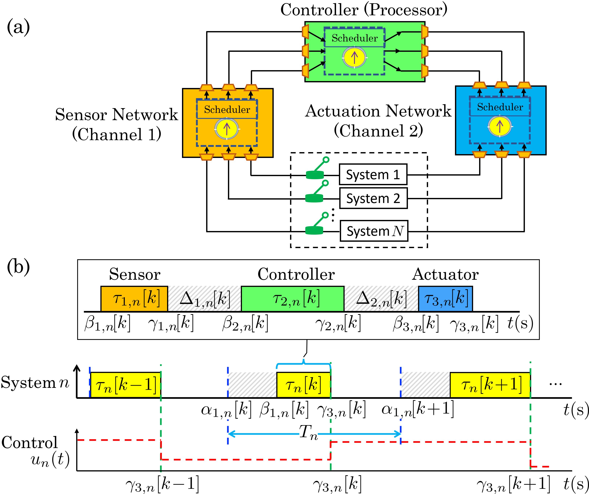
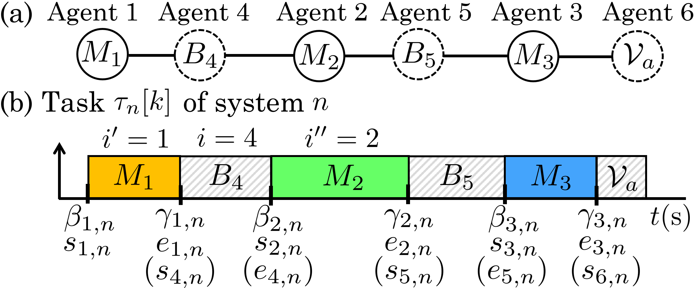
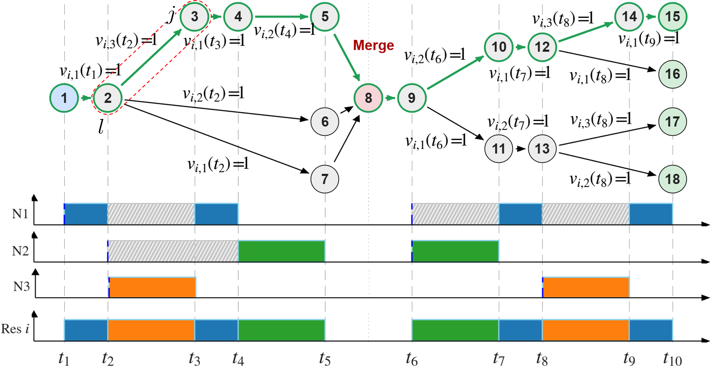

Project 1
Distributed Scheduling and Control Co-Design for Multi-Layer Shared Resources
System architecture, resource-occupation paths, and local scheduling decisions.



Project 1
System architecture, resource-occupation paths, and local scheduling decisions.


